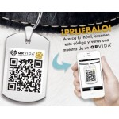
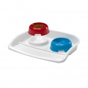
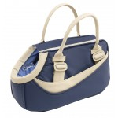
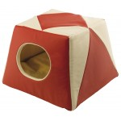
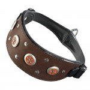
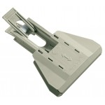
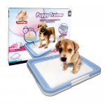
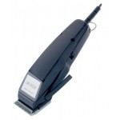

| ALGUNOS ACCESORIOS DISPONIBLES | |||
 Placa QR VIDA especial para Mascotas Placa identificativa basada en un |
 Comedero doble con base Lindo 0.5 litros Comederos dobles para perros y gatos de 500ml |
 Bolso Class 10 azul Bolso porta perros y gatos de de eco-piel. Tamaño: 38 x 20 x 20 cm
|
 Cama Excelsior roja Cama con doble funcionalidad, cama y caseta, para perros pequeños y gatos. Tamaño: 44 x 44 x 33 cm |
 Collar Vip CWS de 33 a 39 cm Elegante collar de cuero con tachuelas aplicadas y sistema de microregulación para galgos |
 Pinza recoge excrementos Nippy Pinza para facilitar la recogida de los excrementos de los perros. |
 Bandeja sanitaria para perros Bandeja sanitaria Puppy Trainer de tamaño mediano. Medidas: 63x48 cm. Incluye 10 empapadores de |
 Máquina cortapelo Moser 1400 Máquina cortapelo alemana profesional con cable |